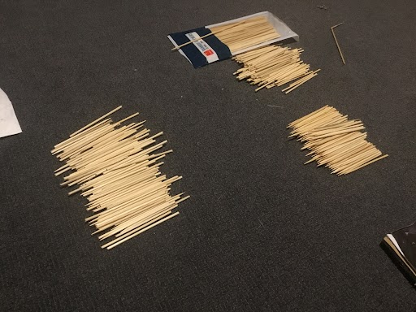

My Project
In our Year 10 Digital Technology class, we built games for people to play at the Year 10 Market Day. My project was Comet Catcher. Comet catcher is a marble drop game where people had to catch the marbles coming down. If enough marbles were caught then they would win a prize. We started this project at the start of term and market day was on week 8. we spent a lot of time on building the marble drop zone (12 full hours). Then we had to build the frame and code the vehicle we were using to catch the marbles.
I had chosen Digi for S2 but had not done it S1 and wasn't looking forward to it at first as I didn't know if any of my friends would be there. I eventully had Miglia join me just before S2 started. When I learnt that we were creating a carnivel game we had a few ideas. Miglia and I came up with the options of either cornhole or a marble drop. Eventully we decided on a marble drop

Brainstoorming how to do it
We decided we would use skewers and cardboard to create the 'drop zone' and ePro8 gear for a stand.
EPro8 buildFor the stand we used the ePro8 kits. It was a 900 by 900mm frame on a slight tilt for the drop zone to fit on.
Canva build
For marketing we used canva to make a poster. It was space themed and we designed it around the name of our game, Comet Catcher.
Microbit build
We ended up using a EV3 instead of a microbit to control the basket used to catch the marbles
Testing
Market day setup
Market day actual
Reflection